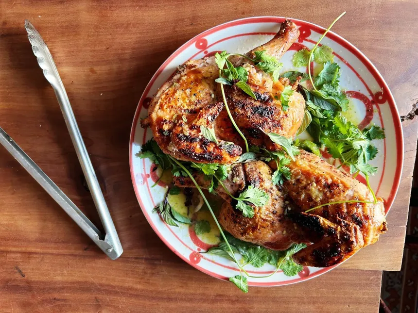

Chicken
Home

Ingredients
- 1 lb chicken breast, cut into bite-sized pieces
- 2 tbsp olive oil
- 1 tsp salt
- 1/2 tsp black pepper
- 1 tsp paprika
- 1 tsp garlic powder
- 1 tsp dried thyme
- 1 lemon, juiced
- 2 cloves garlic, minced
Instructions
- In a bowl, combine olive oil, salt, pepper, paprika, garlic powder, thyme, lemon juice, and minced garlic.
- Add chicken pieces to the bowl and toss to coat evenly with the marinade. Let it marinate for at least 30 minutes.
- Preheat a grill or skillet over medium-high heat. Cook the chicken for 5-7 minutes on each side, or until fully cooked and no longer pink in the center.
- Remove from heat and let the chicken rest for a few minutes before serving.Serve with your favorite sides, such as rice, vegetables, or salad.